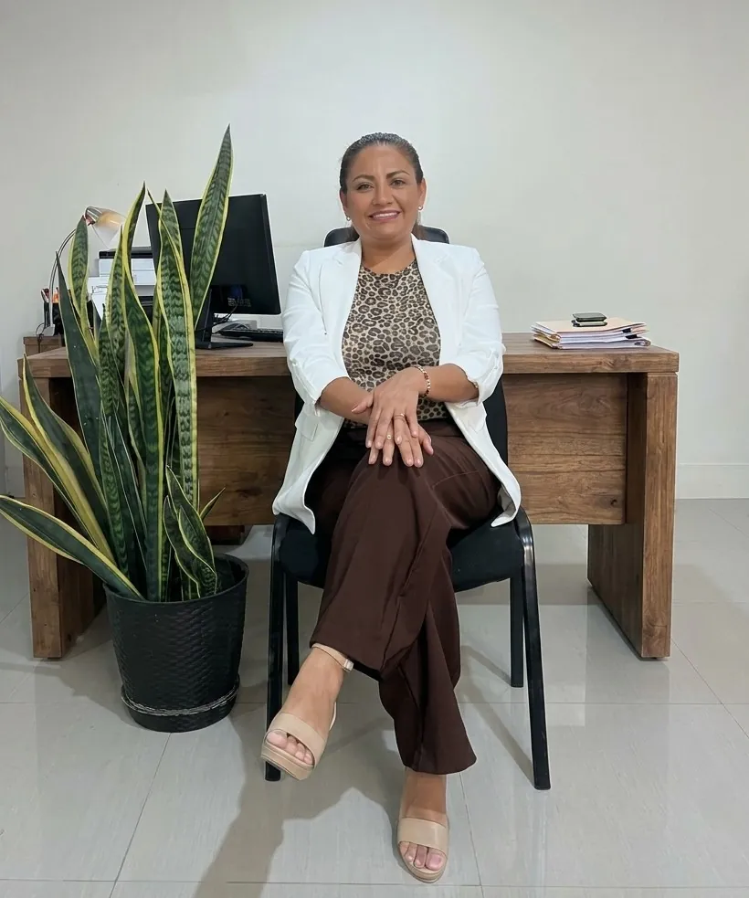

Visión
Consolidar un estudio jurídico que acompañe a personas y organizaciones con criterio profesional, trato cercano y respeto por las normas y la ética del ejercicio legal.
Defensa y asesoría legal: acompañamiento en distintas áreas del Derecho.
Zinthia Garay Paucar (Reg. CAI 3534) es egresada de la Universidad Nacional San Luis Gonzaga de Ica y cuenta con más de 18 años de experiencia profesional y académica. Es Magíster en Gestión Pública y cuenta con una especialización en Gestión Pública por el Centro de Altos Estudios Nacionales (CAEN). Dirige J&N Asesoría Legal y Consultoría y es especialista en Derecho Civil, Derecho Comercial y Recursos Hídricos.
Consolidar un estudio jurídico que acompañe a personas y organizaciones con criterio profesional, trato cercano y respeto por las normas y la ética del ejercicio legal.
Brindar asesoría y patrocinio legal con responsabilidad, rigor técnico y comunicación clara, atendiendo las necesidades de cada persona u organización.
Cuéntanos qué necesitas resolver: encuentra el servicio legal relacionado con tu situación.
12 áreas disponibles
¿Recibiste una citación o afrontas una investigación? Revisamos la información y te explicamos cómo puede organizarse la defensa en cada etapa.
Asesoría y defensa para personas investigadas por presuntos delitos vinculados con contrataciones, recursos o decisiones de la administración pública.
Orientación ante fiscalizaciones y controversias tributarias, así como en investigaciones relacionadas con operaciones financieras.
Revisamos contratos, deudas y conflictos patrimoniales para explicarte las alternativas de negociación o las acciones legales que podrían corresponder.
Te orientamos ante multas, clausuras y cobranzas coactivas, además de trámites de licencias y recursos frente a municipalidades y otras entidades.

Asesoría para trabajadores y empleadores en contratos, beneficios, despidos, inspecciones de SUNAFIL y controversias laborales.
Orientación confidencial en divorcios, alimentos, tenencia y visitas, así como en herencias y distribución de bienes familiares.
Asesoría sobre predios rurales, títulos, linderos, servidumbres y trámites relacionados con el uso del agua.
Orientación legal para actividades pesqueras, portuarias y productivas, incluidos permisos y procedimientos ambientales o administrativos.
Revisión de documentos para servicios digitales y comercio en línea; orientación ante asuntos de datos personales o posibles delitos informáticos.
Evaluamos posibles afectaciones a derechos fundamentales y te explicamos si existe una vía constitucional aplicable a tu situación.
Antes de comprar, vender o alquilar, revisa los antecedentes del inmueble. También orientamos en títulos, saneamiento, posesión y desalojos.
No encontramos áreas con esos términos. Prueba otra búsqueda o .
Analizamos la situación, explicamos las alternativas disponibles y coordinamos el acompañamiento legal de acuerdo con las necesidades del caso.
Asesoría y patrocinio en recuperación de cartera, cobranza coactiva y ejecución de garantías para entidades financieras y organizaciones de la región. La experiencia del estudio también comprende asuntos municipales y de gestión pública.
Así puedes iniciar una consulta y conocer las alternativas para tu situación.
Escríbenos por WhatsApp o usa el formulario. Indica el tema, la ciudad y si tienes una fecha o notificación próxima. No envíes documentos sensibles en el primer mensaje.
El equipo identifica el área relacionada y, si hace falta, te indicará qué información adicional puede ayudar a entender el caso.
Te explicamos las opciones de atención, el alcance del servicio y las condiciones antes de iniciar el patrocinio.
Atendemos de forma presencial en Calle Grau 246A, Chincha Alta, y también coordinamos consultas virtuales. Enviar un mensaje no inicia por sí solo una relación abogado-cliente.
Información práctica antes de comunicarte con el estudio.
La atención presencial es en Calle Grau 246A, Chincha Alta, Ica. También puedes consultar por atención virtual; escríbenos para coordinar la modalidad disponible.
Resume qué ocurrió, en qué ciudad y cuáles son las fechas importantes. Si recibiste una notificación o tienes una audiencia próxima, indícalo. No envíes números de documento, datos bancarios ni archivos confidenciales antes de coordinar con el estudio.
Al contactarnos, menciona cualquier plazo, citación o audiencia cercana. El equipo revisará la disponibilidad y te indicará cómo coordinar. El mensaje no garantiza atención inmediata.
Escríbenos al +51 958 212 450 o usa el formulario. Antes de iniciar el servicio, podrás coordinar la modalidad, conocer su alcance y consultar las condiciones y honorarios aplicables.
No. El contenido del sitio es informativo y no reemplaza la revisión de las circunstancias concretas de un caso por un profesional.
Cuéntanos brevemente qué necesitas y te indicaremos cómo coordinar una consulta.
Calle Grau 246A, Chincha Alta, Ica – 11702
Lunes a viernes: 9:00 a. m. – 6:00 p. m.
Sábados: 9:00 a. m. – 1:00 p. m.
